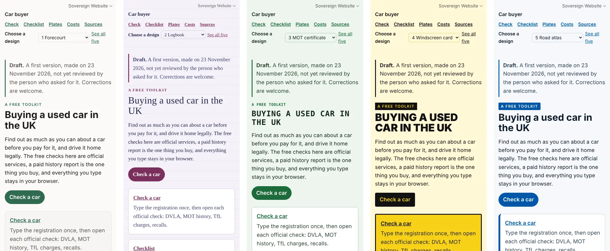

Synthetic users: Car Buyer, round 4 (the five designs)
Site: https://car-buyer.tool.sovereignweb.site/ at 1f238b7 (v0.1.5), with five designs: 1 Forecourt (default), 2 Logbook, 3 MOT certificate, 4 Windscreen card, 5 Road atlas. Run: 23 November 2026, about 17:15 UTC, by design.b.rounds. Would you use this before buying a car? 5 of 5. Look 2.8 (3, 3, 3, 3, 2). Five ideas or five skins? Five skins, by 5 of 5. Nobody said "wow". The review.
Method: Synthetic users. One agent played five personas, from the home page and the checklist in each design, and /designs/. A design critic replaced the trade sceptic, to judge the five. These are simulations, and never replace the measured checks or a real person.
| Persona | Use it? | Look | Best design | Weakest | On the five |
|---|---|---|---|---|---|
| First-time buyer | yes | 3 | Windscreen card | Logbook | "They're the same page in different paint." |
| Parent | yes | 3 | MOT certificate | Windscreen card | "Same structure every time ... it's the same form underneath." Delete looks like Print in Windscreen card. |
| Londoner | yes, with a doubt | 3 | Road atlas | Logbook | "Five skins. Road atlas has a road-map feel ... but the page is laid out exactly like the green one." |
| Low-vision reader | yes | 3 | Forecourt | Logbook | "Logbook's lines run behind the words, and MOT certificate's monospace capitals are slower to read." |
| Design critic | yes | 2 | Windscreen card | Road atlas | "Five skins of one page, and the site says so itself: 'The same site in five looks'." |
Best-design votes: Windscreen card 2, MOT certificate 1, Road atlas 1, Forecourt 1, Logbook 0. Logbook was named weakest three times.
The evidence for "five skins": - the visible text is identical in designs 1, 2 and 5, and only capitalised in 3 and 4; - the order, the card grid and the checklist's 22 items are the same in all five; - /designs/ shows text cards, not previews, and says "The same site in five looks".
